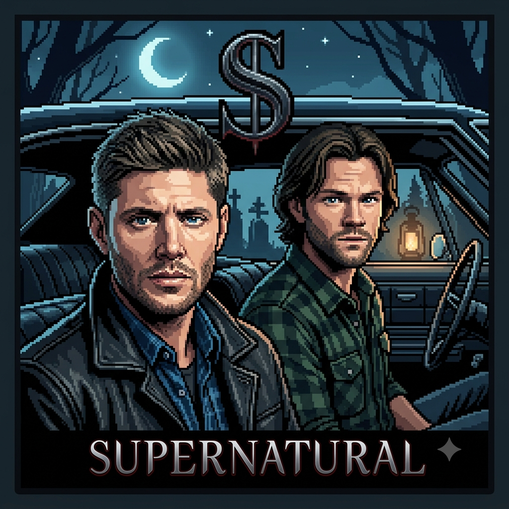

Meu primeiro post
Por: Ingridy Regina
Boas-vindas a minha primeira publicação! Nesse momento irei falar um pouco sobre a serie e curiosidades sobre ela.
irei falar sobre um pouco da serie supernatural
Por: Ingridy Regina
Boas-vindas a minha primeira publicação! Nesse momento irei falar um pouco sobre a serie e curiosidades sobre ela.
